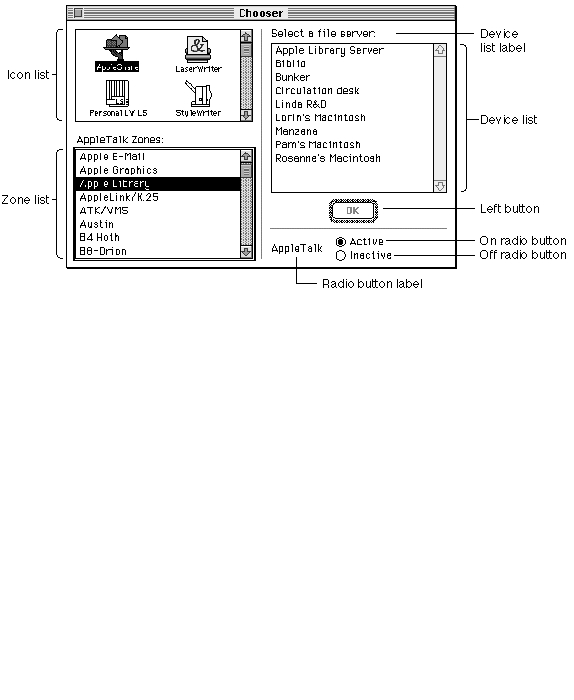
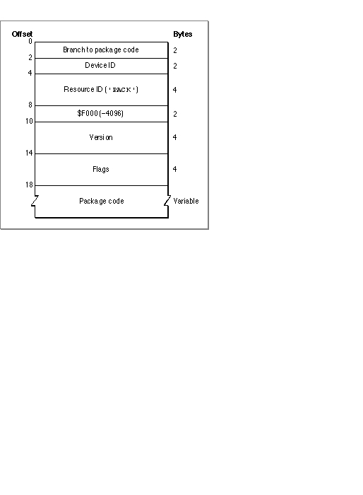

Writing a Chooser-Compatible Device Driver
The Chooser is a desk accessory that helps provide a standard user interface for networking and printing device drivers. The Chooser allows the user to make choices such as which serial port to use, which AppleTalk zone to communicate with, and which LaserWriter to use.This section describes how the Chooser works, how to create a Chooser extension, and how to respond to actions from the user. You should read the previous section, "Writing a Device Driver," before you read this section.
How the Chooser Works
The Chooser allows users to select which devices they want to use. When the user opens the Chooser, it displays a window containing lists and buttons for making
device-related choices. Typically, users select a type of device from the icon list, then select the particular device they want to use from the device list. For AppleTalk devices, the user must also select an AppleTalk zone from the zone list. The Chooser window can also display buttons, such as an OK button; and radio buttons, such as the background printing On and Off buttons. Figure 1-10 shows an example of the Chooser window.Figure 1-10 The Chooser window

The Chooser relies on the List Manager for creating, displaying, and manipulating possible user selections in this window. You may want to read the chapter "List Manager" in Inside Macintosh: More Macintosh Toolbox for more information.
The Chooser does not communicate directly with device drivers; instead, it communicates with device packages. A device package is a resource similar to a driver resource, except a device package responds to Chooser messages instead of Device Manager requests. The device package is responsible for communicating the user's choices to the device driver.
Device packages are stored in Chooser extension files, which the Chooser looks for in the Extensions folder inside the System Folder of the startup disk. A Chooser extension file contains a number of resources in addition to the device package resource. These other resources contain information about the buttons, labels, and lists that the Chooser displays when the user selects the device icon from the icon list. You use these resources to define the following properties:
When a user selects the icon corresponding to a particular device package, the Chooser sends messages to that device package by calling the device package as if it were the following function:
- The device list label. The Chooser displays this label over the device list.
- The buttons to use. The Chooser allows the device package to display up to four buttons, called the Left button, the Right button, the On radio button, and the Off radio button.
- The titles and positions of the buttons.
- The radio button label.
- The AppleTalk device type name. The Chooser searches the current AppleTalk zone for devices of this type.
- An AppleTalk Name-Binding Protocol (NBP) retry interval and a timeout count. The Chooser uses this information when searching for AppleTalk devices.
pascal OSErr MyPackage (short message, short caller, StringPtr objName, StringPtr zoneName, long p1, long p2);The Chooser passes the following parameters to the device package:Parameter Description
message- The operation to be performed; this parameter has one of the following values:
enum { /* Chooser messages */ chooserInitMsg = 11, newSelMsg = 12, fillListMsg = 13, getSelMsg = 14, selectMsg = 15, deselectMsg = 16, terminateMsg = 17, buttonMsg = 19 };When the user opens the Chooser, the Chooser searches the Extensions folder for Chooser extension files. For each one it finds, it opens the file, fetches the device icon, reads the flags field of the device package header, and closes the file. The Chooser then displays each device icon, and dims the icons for AppleTalk devices if AppleTalk is not connected.
- Table 1-4 on page 1-47 explains the meaning of these messages.
caller- A number that identifies the application calling your device package. The value
chooserIDindicates the Chooser. Values in the range 0-127 are reserved; values outside this range may be used by applications.objName- Additional information whose meaning depends on the value of the
messageparameter. See Table 1-4 on page 1-47 for more information.zoneName- The name of the AppleTalk zone containing the devices in the device list. If the Chooser is being used with the local zone and bit 24 of the
flagsfield of the device package header is not set, the string value is "*", otherwise, it is the actual zone name. See "Creating a Device Package" on page 1-45 for more information about the package header.p1- A handle to the List Manager list that contains the device choices displayed in the device list box.
p2- Additional information whose meaning depends on the value of the
messageparameter. See Table 1-4 on page 1-47 for more details.When the user selects a device icon that is not dimmed, the Chooser reopens the corresponding Chooser extension file and performs the following actions:
- The Chooser labels the device list with the device list label.
- The Chooser sends the
chooserInitMsgmessage to the device package.- If the selected device package represents a serial printer, the Chooser places the two icons that represent the printer port and the modem port serial drivers into the device list box. When the user makes a selection, the Chooser records the user's choice in low memory and parameter RAM.
- If the selected device icon represents an AppleTalk device and the corresponding device package does not accept
fillListMsgmessages, the Chooser initiates an asynchronous routine that interrogates the current AppleTalk zone for all devices whose type matches the AppleTalk device type name specified in the Chooser extension file. The asynchronous routine uses the retry interval and the timeout count. As responses arrive, the Chooser updates the device list.- If the device package does accept
fillListMsgmessages, the Chooser sends thefillListMsgmessage to the device package. The device package responds by filling the device list with the appropriate device choices.- To determine which devices in the device list should be selected, the Chooser calls the device package with the
getSelMsgmessage. The device package responds by inspecting the list and setting the selected or unselected state of each entry. The Chooser may send thegetSelMsgmessage frequently; for example, each time a new response to the AppleTalk zone interrogation arrives. The Chooser does not send thegetSelMsgmessage for serial printers; it highlights the icon corresponding to the currently selected serial port, as recorded in low memory.- If the device package allows multiple devices to be active at once, the Chooser sets the appropriate List Manager bits. When the user selects or deselects a device, the Chooser calls the device package with the appropriate message. For packages that do not accept multiple active devices, the Chooser sends the
selectMsgordeselectMsgmessage; otherwise, it sends thenewSelMsgmessage. The device package mounts or unmounts the device, if appropriate, and records the user's choice.- When the user selects a different device icon or closes the Chooser, the Chooser calls the current device package with the
terminateMsgmessage, if the package accepts this kind of message. At this time, the package can clean up, if necessary. The Chooser then calls theUpdateResFilefunction, closes the device resource file, and flushes the system startup volume.Creating a Chooser Extension File
The Chooser uses three file types to identify different kinds of devices supported by Chooser extension files:
File type Device type 'PRES' Serial printer 'PRER' Non-serial printer 'RDEV' Other device You can specify the creator of your Chooser extension file, which allows you to give your device its own icon.
You can include the following resources in your Chooser extension file:
Resource type Resource ID Description 'PACK' -4096 Device package. This resource contains the device package header and code. 'STR ' -4096 Type name for AppleTalk devices. The Chooser searches the current AppleTalk zone for devices of this type. 'GNRL' -4096 AppleTalk information. The first byte of this resource contains the Name-Binding Protocol (NBP) retry interval, the second byte contains the timeout count. 'STR ' -4091 List box label. The Chooser labels the device list with this string after the user has selected the device's icon. 'STR ' -4087 Radio button label. 'STR ' -4088 Off radio button title. 'STR ' -4089 On radio button title. 'STR ' -4092 Right button title. 'STR ' -4093 Left button title. 'ncrt' -4096 Button positions. 'LDEF' -4096 Alternate list definition function. You can supply this function to modify the device list--to include pictures or icons, for example. 'STR ' -4090 Reserved for use by the Chooser. You should also include a
'BNDL'resource (and appropriate icon family resources) to give your device type a distinctive icon because this may be the only way that devices are identified in the Chooser window. The chapter "Finder Interface" in Inside Macintosh: Macintosh Toolbox Essentials describes the'BNDL'resource.The Chooser allows your device package to display two buttons, called the Left button and the Right button because of their default positions. The Left button has a double border and is highlighted (the title string is dark) when one or more devices are selected in the device list. When this button is highlighted, pressing the Return or Enter key, or double-clicking in the device list, is equivalent to clicking the button. The Right button has a single border and is always highlighted. The user can activate it only by clicking it.
The Chooser also allows you to display two radio buttons and a radio button label. These buttons are called the On radio button and the Off radio button because those are the titles the LaserWriter uses, but you can name them anything you want.
You can position these buttons by including a resource of type
'ncrt'with an ID of -4096. The first word in this type of resource specifies the number of rectangles, and the rest of the resource contains the rectangle definitions. The first rectangle positions the Left button, the second positions the Right button, the third positions the On radio button, and the fourth positions the Off radio button. The fifth rectangle positions the radio button label.Each rectangle definition is 8 bytes long and contains the rectangle coordinates in the order [top, left, bottom, right]. The default values are [112, 206, 132, 266] for the Left button and [112, 296, 132, 356] for the Right button. You could use the values [112, 251, 132, 331] to center a single button.
The Chooser uses the List Manager to produce and display the standard device list. You can supply a list definition function to modify this list. For example, you might want to include pictures or icons in your list. To do this, you must provide a resource of type
'LDEF'with an ID of -4096. For complete information about list construction and data structures, see the chapter "List Manager" in Inside Macintosh: More Macintosh Toolbox.Creating a Device Package
Like a driver resource, a device package has two parts:Figure 1-11 shows the structure of a device package.
- a header that contains flags and other information about the driver
- the code that responds to Chooser messages
Figure 1-11 Structure of a device package

Since the Chooser expects the package code to be at the beginning of the device package, the first field of the package header should be a
BRA.Sinstruction to the package code.The device ID is an integer that identifies the device. The version field differentiates versions of the driver code.
The flags field contains information about the device package and the device it serves. Table 1-3 lists the meaning of each bit of the flags field.
The package code should implement the
MyPackagefunction described on page 1-42. The following section, "Responding to the Chooser," discusses how to implement this function.Responding to the Chooser
This section gives more details about how your device package should respond when it receives a message from the Chooser.When the Chooser sends your device package a message, the Chooser extension file is the current resource file and the Chooser window is the current graphics port. The startup disk is the default volume and the System Folder of the startup disk is the default directory. Your device package must preserve all of these.
Table 1-4 lists the Chooser messages and how your device package should respond to them.
Table 1-4 Chooser messages and their meanings Message Meaning chooserInitMsg The Chooser sends this message to your device package when the user selects the icon representing your device in the icon list. The objNameparameter contains a pointer to a data structure that contains a size word followed by four handles to structures of typeControlRecord. The size is at least 18 bytes (2 bytes for the size word and 4 bytes for each of the handles). The handles reference the Left and Right buttons and the On and Off radio buttons, in that order. Your device package can respond to this message by setting up the initial button configuration. To display any of the radio buttons, use theShowControlfunction. To highlight them, use theSetControlValuefunction. Thep2parameter is not used. For more information about controls, see the chapter "Control Manager" in Inside Macintosh: Macintosh Toolbox Essentials.newSelMsg If your device package allows multiple selections, the Chooser sends this message to your package when the user changes or adds a selection. The objNameandp2parameters are not used.fillListMsg The Chooser sends this message when the user selects a device icon. The p1parameter contains a handle to a List Manager list. Your device package should use the List Manager to fill this list with choices for the particular type of device. TheobjNameandp2parameters are not used.getSelMsg The Chooser sends this message to determine which devices in the device list should be selected. The p1parameter contains a handle to a List Manager list. Your device package should respond by inspecting the list and setting the selected or unselected state of each entry, using theLSetSelectfunction. You should alter only the entries that require updating. The Chooser does not send this message for serial printers.selectMsg If your device package does not allow multiple selections, the Chooser sends this message to your package when the user selects a device in the device list. You should record the user's selection, preferably in your Chooser extension file. Your device package may not call the List Manager in response to this message. If your device package accepts fillListMsgmessages, theobjNameparameter is undefined and thep2parameter contains the row number of the selected device.If your device package does not accept fillListMsgmessages, theobjNameparameter contains a pointer to a string containing the name of the device (up to 32 characters). If the device is an AppleTalk device, thep2parameter contains theAddrBlockvalue for the address of the selected AppleTalk device. For more information about AppleTalk devices, refer to Inside Macintosh:Networking.deselectMsg If your device package does not allow multiple selections, the Chooser sends this message to your package when the user deselects a device in the device list. Your device package may not call the List Manager in response to this message. If your device package accepts fillListMsgmessages, theobjNameparameter is undefined and thep2parameter contains the row number of the device that was deselected.If your device package does not accept fillListMsgmessages, theobjNameparameter contains a pointer to a string containing the name of the device (up to 32 characters). If the device is an AppleTalk device, thep2parameter contains theAddrBlockvalue for the address of the selected AppleTalk device. For more information about AppleTalk devices, refer to Inside Macintosh:Networking.terminateMsg The Chooser sends this message when the user selects a different device icon, closes the Chooser window, or changes zones. Your device package should perform any necessary cleanup tasks but should not dispose of the device list. The objNameandp2parameters are not used.buttonMsg The Chooser sends this message when the user clicks one of the buttons in the Chooser window. The low-order byte of the p2parameter contains 1 if the user clicked the Left button, 2 if the user clicked the Right button, 3 if the user clicked the On radio button, and 4 if the user clicked the Off radio button. You must perform the appropriate highlighting for the radio buttons. The high-order word of thep2parameter contains the modifier bits from the mouse-up event. See the chapters "Control Manager" and "Event Manager" in Inside Macintosh: Macintosh Toolbox Essentials for more information.Allocating Private Storage
Device packages initially have no data space allocated. There are two ways your device package can acquire data space:The Chooser uses column 0 of the device list structure to store the names displayed in the device list. For device packages that do not accept
- Use the List Manager to allocate extra memory in the device list.
- Create a resource.
fillListMsgmessages, the Chooser uses column 1 to store the 4-byte AppleTalk internet addresses of the devices in the list. Therefore, your device package can use column 1 and higher (if it acceptsfillListMsgmessages) or column 2 and higher to store private data. You can use standard List Manager functions to add these columns, store data in them, and retrieve the data stored there. Your device package can also use therefConfield of the device list for its own purposes.Using the device list is limited by the fact that the Chooser disposes of the device list whenever the user changes device types or changes the current zone. However, the Chooser does call your device package with the
terminateMsgmessage before it disposes of the list.Also, if your device package does not accept
fillListMsgmessages, the Chooser disposes of the device list whenever a new response from the AppleTalk zone interrogation arrives. However, the Chooser does send thegetSelMsgmessage immediately afterward.The second way to obtain storage space is to create a resource in the device resource file. This file is always the current resource file when the Chooser sends a message to the package, so you can use the
GetResourcefunction to obtain a handle to the storage.It is important for most device packages to record which devices the user has chosen. The recommended method for this is to create a resource in your driver resource file. This resource can be of any type; in fact, it's advantageous to provide your own resource type so that no other program will try to modify it. If you choose to use a standard resource type, you should use only resource IDs in the range -4080 through -4065.
Subtopics
- How the Chooser Works
- Creating a Chooser Extension File
- Creating a Device Package
- Responding to the Chooser
- Allocating Private Storage